Scannez et notez vos copies
Imprimez la feuille de réponses, scannez la pile avec l’iPhone : notes et analyse par question en quelques minutes. Sans compte, élèves gardés sur l’appareil.
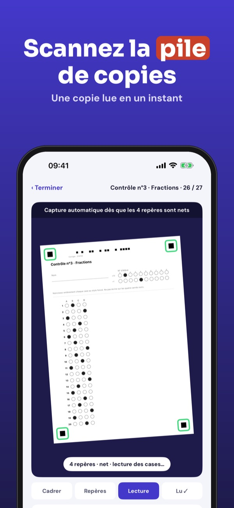
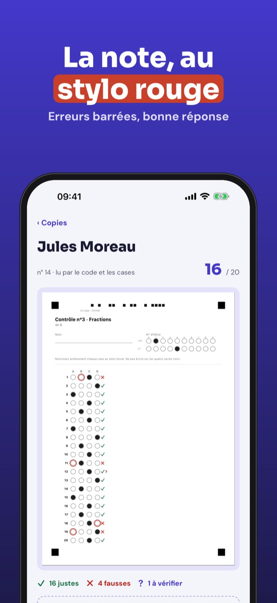
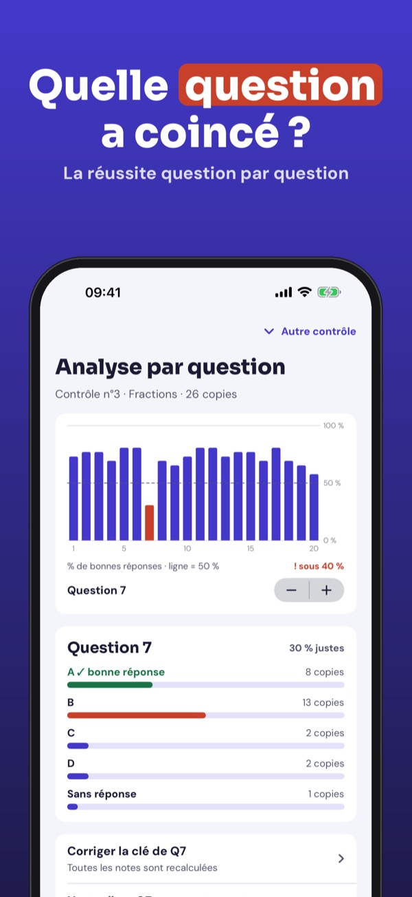
Corrigia corrige vos QCM avec l’appareil photo. Créez le contrôle et sa clé, imprimez la feuille de réponses, puis scannez les copies une à une : Corrigia lit les cases, propose la note et montre les questions qui ont posé problème.
Jusqu’à 30 copies par contrôle, avec classes, notes, analyse et export CSV, sans achat. Corrigia Plus est un achat unique : copies sans limite, PDF des copies corrigées, partage avec un collègue et feuilles nominatives. Sans abonnement.
Corrigia lit les cases noircies et propose une note. Vérifiez toujours les cases signalées : la lecture dépend de l’impression, de la lumière et du stylo. Corrigia ne lit que ses propres feuilles de réponses.
Terms of Use (EULA): https://www.apple.com/legal/internet-services/itunes/dev/stdeula/
Privacy: https://baytechbv.github.io/privacy/corrigia-eu/
Scansiona i test a crocette
Stampa il foglio risposte, scansiona la pila con l’iPhone: voti e analisi per domanda in pochi minuti. Nessun account, i dati degli studenti restano sul dispositivo.
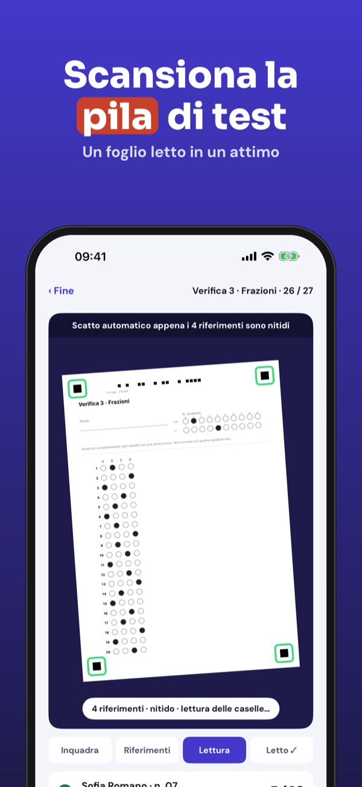
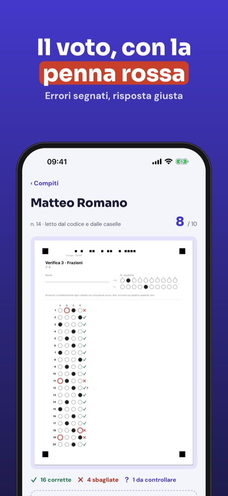
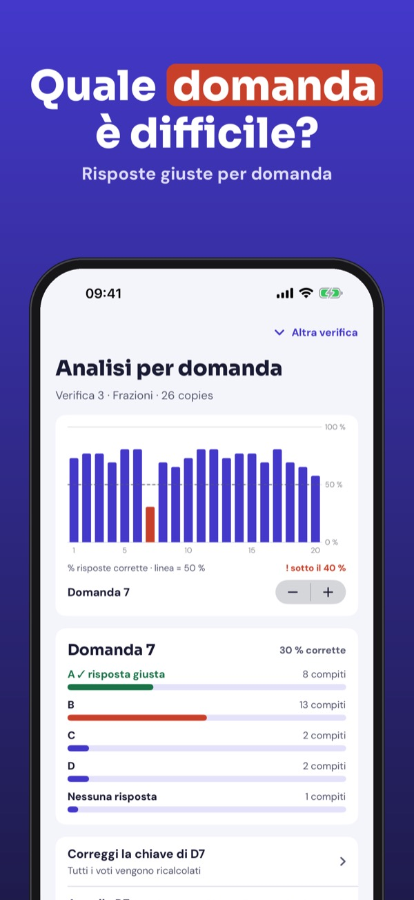
Corrigia corregge le verifiche a crocette con la fotocamera. Crea la verifica e la chiave, stampa il foglio risposte e scansiona i fogli uno dopo l’altro: Corrigia legge le caselle, propone il voto e mostra le domande più difficili.
Fino a 30 fogli per verifica, con classi, voti, analisi ed export CSV, senza acquisto. Corrigia Plus è un acquisto unico: fogli illimitati, PDF dei fogli corretti, condivisione con un collega e fogli nominativi. Nessun abbonamento.
Corrigia legge le caselle annerite e propone un voto. Controlla sempre le caselle segnalate: la lettura dipende da stampa, luce e penna. Corrigia legge solo i propri fogli risposte.
Terms of Use (EULA): https://www.apple.com/legal/internet-services/itunes/dev/stdeula/
Privacy: https://baytechbv.github.io/privacy/corrigia-eu/
Grelhas de resposta com câmara
Imprima a grelha de resposta, digitalize a pilha com o iPhone: notas e análise por pergunta em poucos minutos. Sem conta, os dados dos alunos ficam no aparelho.
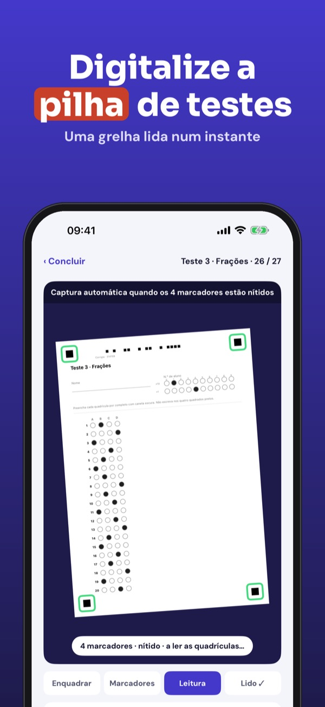
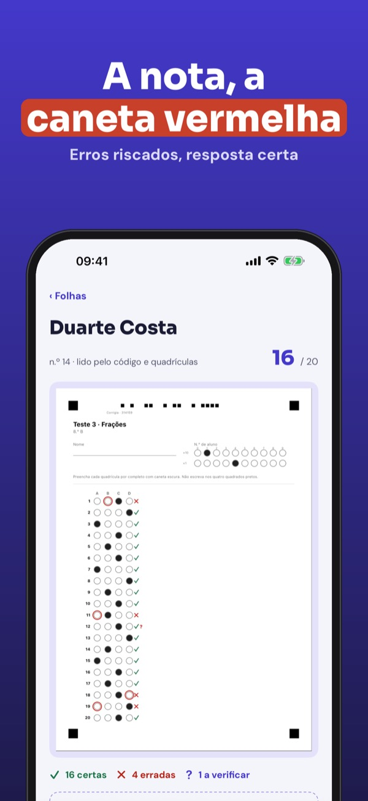
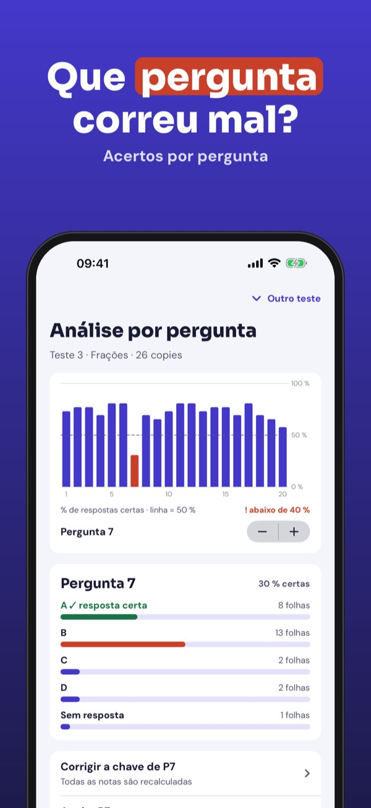
O Corrigia corrige testes de escolha múltipla com a câmara. Crie o teste e a chave, imprima a grelha de resposta e digitalize as folhas uma a uma: o Corrigia lê as quadrículas, propõe a nota e mostra as perguntas que correram pior.
Até 30 folhas por teste, com turmas, notas, análise e exportação CSV, sem compra. O Corrigia Plus é uma compra única: folhas ilimitadas, PDF dos testes corrigidos, partilha com um colega e grelhas nominativas. Sem assinatura.
O Corrigia lê as quadrículas preenchidas e propõe uma nota. Verifique sempre as quadrículas assinaladas: a leitura depende da impressão, da luz e da caneta. O Corrigia só lê as suas próprias grelhas.
Terms of Use (EULA): https://www.apple.com/legal/internet-services/itunes/dev/stdeula/
Privacy: https://baytechbv.github.io/privacy/corrigia-eu/
Skanuj karty odpowiedzi
Wydrukuj kartę odpowiedzi i zeskanuj stos prac iPhonem: oceny i analiza każdego pytania w kilka minut. Bez konta, dane uczniów zostają na urządzeniu.
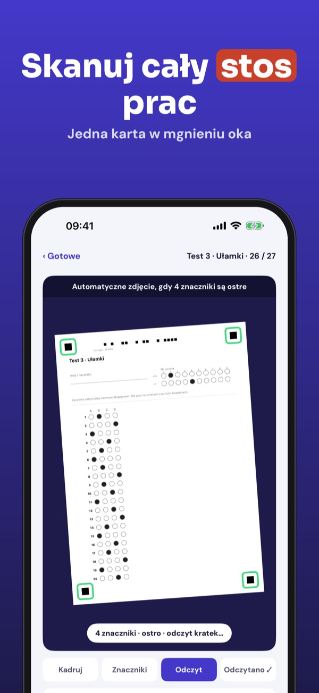
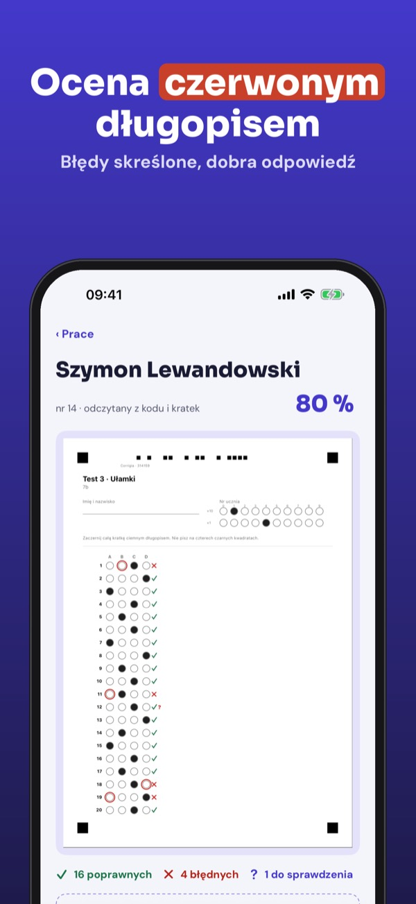
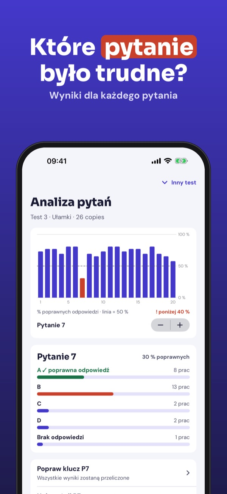
Corrigia sprawdza testy wielokrotnego wyboru aparatem. Utwórz test i klucz, wydrukuj kartę odpowiedzi i skanuj prace jedna po drugiej: Corrigia odczytuje kratki, proponuje ocenę i pokazuje pytania, które sprawiły kłopot.
Do 30 kart na test, z klasami, ocenami, analizą i eksportem CSV, bez zakupu. Corrigia Plus to jednorazowy zakup: karty bez limitu, PDF sprawdzonych prac, udostępnianie koledze i karty imienne. Bez subskrypcji.
Corrigia odczytuje zaczernione kratki i proponuje ocenę. Zawsze sprawdzaj oznaczone kratki: odczyt zależy od wydruku, światła i długopisu. Corrigia czyta tylko własne karty odpowiedzi.
Terms of Use (EULA): https://www.apple.com/legal/internet-services/itunes/dev/stdeula/
Privacy: https://baytechbv.github.io/privacy/corrigia-eu/
Antwortbögen per Kamera lesen
Antwortbogen drucken, den Stapel mit dem iPhone scannen: Noten und Auswertung pro Frage in wenigen Minuten. Ohne Konto, Schülerdaten bleiben auf dem Gerät.
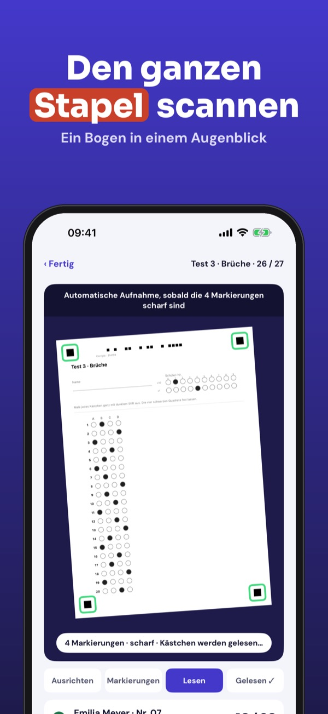
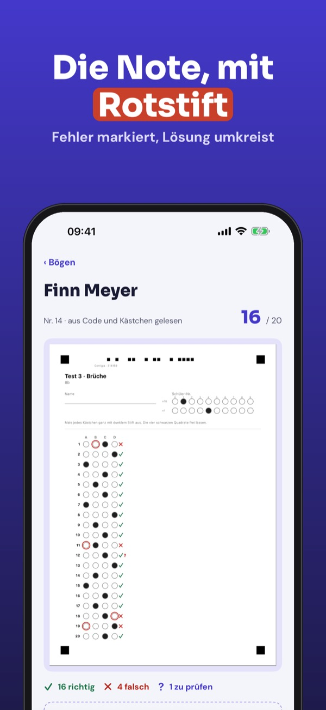
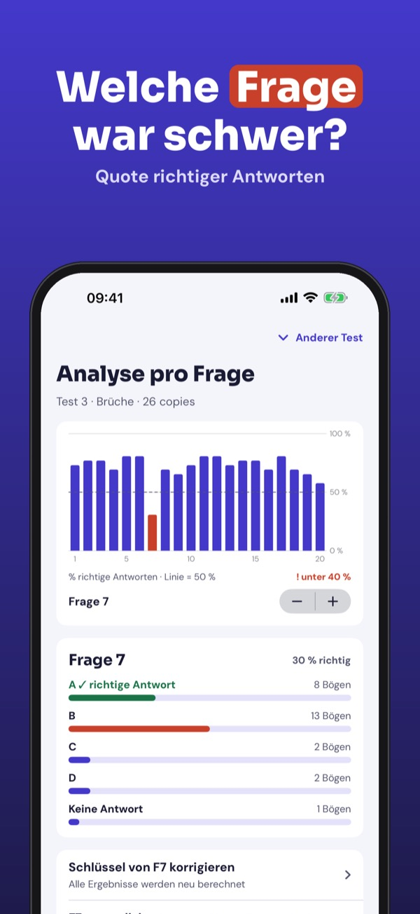
Corrigia korrigiert Multiple-Choice-Tests mit der Kamera. Lege Test und Lösungsschlüssel an, drucke den Antwortbogen und scanne die Bögen nacheinander: Corrigia liest die Kreuze, schlägt die Note vor und zeigt, welche Fragen schwer waren.
Bis zu 30 Bögen pro Test, mit Klassen, Noten, Auswertung und CSV-Export, ohne Kauf. Corrigia Plus ist ein Einmalkauf: unbegrenzt Bögen, PDF der korrigierten Bögen, Teilen mit Kollegen und Bögen mit Namen. Kein Abo.
Corrigia liest geschwärzte Kästchen und schlägt eine Note vor. Prüfe markierte Kästchen immer selbst: Das Lesen hängt von Druck, Licht und Stift ab. Corrigia liest nur die eigenen Antwortbögen.
Terms of Use (EULA): https://www.apple.com/legal/internet-services/itunes/dev/stdeula/
Privacy: https://baytechbv.github.io/privacy/corrigia-eu/
Antwoordbladen scannen
Print het antwoordblad, scan de stapel met je iPhone: cijfers en analyse per vraag in een paar minuten. Geen account, leerlinggegevens blijven op je toestel.
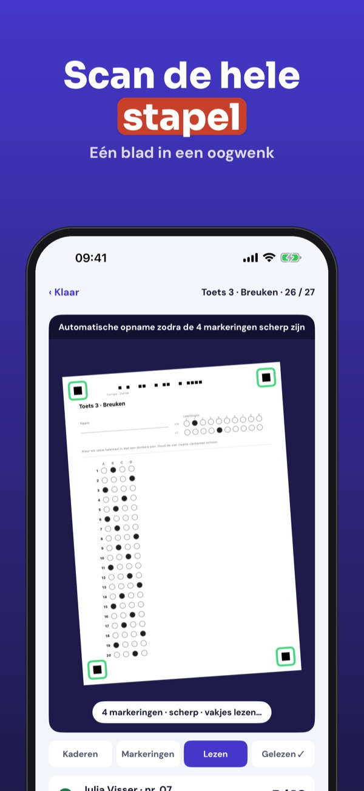
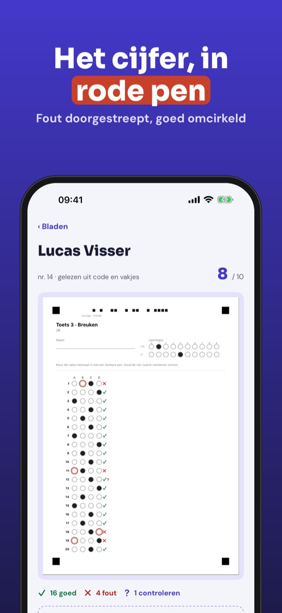
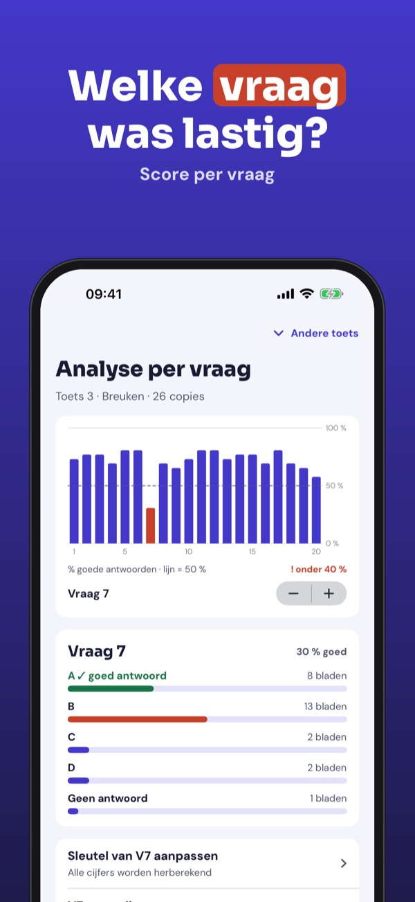
Corrigia kijkt meerkeuzetoetsen na met de camera. Maak de toets en de sleutel, print het antwoordblad en scan de bladen één voor één: Corrigia leest de vakjes, stelt het cijfer voor en laat zien welke vragen lastig waren.
Tot 30 bladen per toets, met klassen, cijfers, analyse en CSV-export, zonder aankoop. Corrigia Plus is een eenmalige aankoop: onbeperkt bladen, PDF van nagekeken bladen, delen met een collega en bladen op naam. Geen abonnement.
Corrigia leest ingekleurde vakjes en stelt een cijfer voor. Controleer gemarkeerde vakjes altijd zelf: het lezen hangt af van print, licht en pen. Corrigia leest alleen zijn eigen antwoordbladen.
Terms of Use (EULA): https://www.apple.com/legal/internet-services/itunes/dev/stdeula/
Privacy: https://baytechbv.github.io/privacy/corrigia-eu/
Hojas de respuesta con cámara
Imprime la hoja de respuestas y escanea el montón con el iPhone: notas y análisis por pregunta en pocos minutos. Sin cuenta: el alumnado se queda en el aparato.
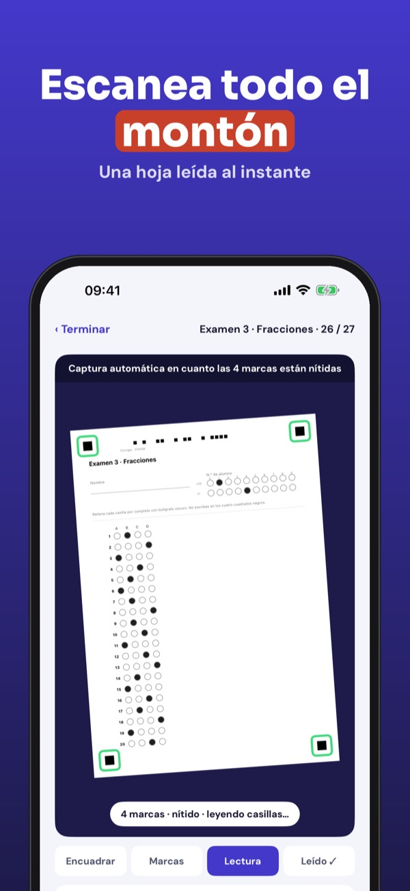
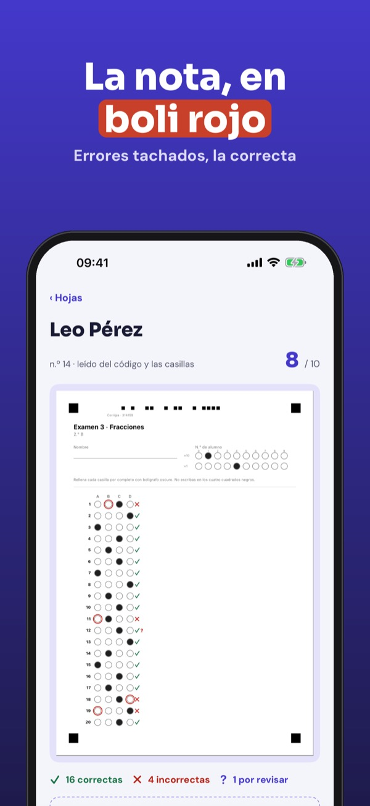
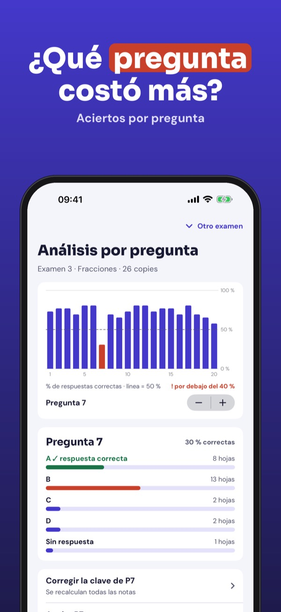
Corrigia corrige exámenes tipo test con la cámara. Crea el examen y la clave, imprime la hoja de respuestas y escanea las hojas una a una: Corrigia lee las casillas, propone la nota y muestra las preguntas que más costaron.
Hasta 30 hojas por examen, con clases, notas, análisis y exportación CSV, sin compra. Corrigia Plus es una compra única: hojas ilimitadas, PDF de las hojas corregidas, compartir con un colega y hojas nominativas. Sin suscripción.
Corrigia lee las casillas rellenadas y propone una nota. Revisa siempre las casillas señaladas: la lectura depende de la impresión, la luz y el bolígrafo. Corrigia solo lee sus propias hojas de respuestas.
Terms of Use (EULA): https://www.apple.com/legal/internet-services/itunes/dev/stdeula/
Privacy: https://baytechbv.github.io/privacy/corrigia-eu/